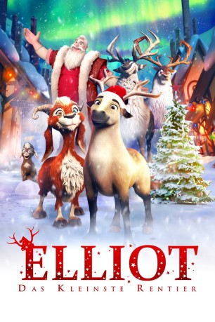

#11990 Elliot - Das kleinste Rentier
Alternativ: The Littlest Reindeer (Englischer Titel)
 
 IMDB-Wertung: 5.0 / 10
IMDB-Wertung: 5.0 / 10  Tomatometer: 30
Tomatometer: 30  Metascore: 38
Metascore: 38 
Einmal Rentier sein und den Schlitten des Weihnachtsmannes ziehen - das ist der größte Traum von Minipferd Elliot. Kurz vor Weihnachten scheint seine Chance endlich gekommen. Denn eins der Rentiere des Weihnachtsmanns verkündet, dass es ab sofort in den Ruhestand gehen wird. Der Weihnachtsmann muss also schnellstens für Ersatz sorgen! Das ist die Chance für Elliot, den langersehnten Platz vor dem Schlitten zu ergattern. Mit Hilfe seiner besten Freundin, der Ziege Hazel, möchte er beweisen, dass er für den Job genau der Richtige ist. Sie reisen heimlich zum Nordpol-Rentier-Rennen, dem wichtigsten Wettkampf unter den Rentieren. Währenddessen ist die Heimat der beiden tierischen Freunde in Gefahr, denn Bauer Walter hat kaum noch Geld und muss den Streichelzoo wahrscheinlich verkaufen. Elliot wird vor eine schwierige Entscheidung gestellt: Rettet er seine Freunde oder folgt er seinem großen Traum und ergattert den Job als Weihnachts-Rentier?
Jahr: 2018
Dauer: 89 Minuten
FSK: 0
Land: Kanada Studio: Splendid FilmTonspuren: DTS - ,
Untertitel: Deutsch,
Auflösung: 1080p (1920x816) Größe: 4229 MB
Genre: Animation/Trick, Familie, Weihnachten
Regisseur: Jennifer Westcott
Drehbuch: Jennifer Westcott
Soundtrack: Igor Correia, Robert Melamed
Darsteller:
 Morena Baccarin als Corkie
Morena Baccarin als Corkie Josh Hutcherson als Elliot
Josh Hutcherson als Elliot John Cleese als Donner
John Cleese als Donner Martin Short als Lemondrop / Ludzinka / Blitzen
Martin Short als Lemondrop / Ludzinka / Blitzen Jeff Dunham als Clyde / Peanutbutter
Jeff Dunham als Clyde / Peanutbutter Samantha Bee als Hazel
Samantha Bee als Hazel- Christopher Jacot als DJ / Ignacio / Kitchen Elf
 Jean Yoon als Jolene / Reindeer 5
Jean Yoon als Jolene / Reindeer 5 George Buza als Santa
George Buza als Santa- Rob Tinkler als Walter / Russian Coach
- Julie Lemieux als Olga / Computer Translator / Swedish Coach / Reindeer 1 / Moshennika / Blueberry
- Scott Farley als Henrik / Elf Reporter / Polish Coach / Reindeer 3 / Crowd Member 2
- Carly Heffernan als Sasha / Reindeer 4
- Steph Lynn Robinson als Dancer / Reporter Elf / Reindeer 8
- Angela Fusco als Mrs. Claus
- Carlos Bustamante als Dasher
- Quancetia Hamilton als Vixen
- Darren Frost als Bouncer Elf / Reindeer 2 / Coach
Datei: X:\Kinder Filme (A-F)\Elliot - Das kleinste Rentier (2018, FSK0, 1920x816).mkv seit 01.11.2019
Festplatte: Kinder-Filme+Trick
 Es gibt insgesamt 68 Filme in der Gruppe 'Kinder Filme (A-F)'
Es gibt insgesamt 68 Filme in der Gruppe 'Kinder Filme (A-F)'